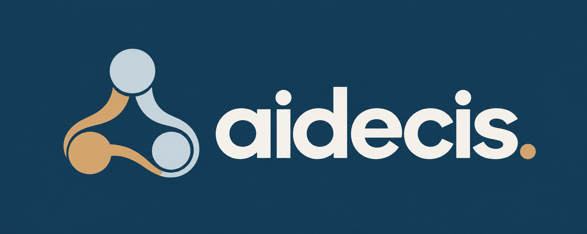

US$1.4T
Estimated annual downtime cost
Siemens’ estimate for the world’s 500 largest companies. A broad, survey-based estimate—not the cost of one decision type.
Siemens, The True Cost of Downtime 2024 ↗
ContactDecision costs · Market intelligence
Disruption, downtime and exceptions carry real costs. Published evidence shows their scale—and where a decision can change the outcome.
Explore the evidence
Published evidence · different scopes
These figures put the scale of the challenge in context. Each source measures a different exposure or process cost; your organisation’s business case starts with its own baseline.
US$1.4T
Siemens’ estimate for the world’s 500 largest companies. A broad, survey-based estimate—not the cost of one decision type.
Siemens, The True Cost of Downtime 2024 ↗~45%
McKinsey’s modelled expected disruption losses across 13 industries. A cumulative risk model—not an annual dollar loss.
McKinsey Global Institute, 2020 ↗US$6
APQC’s cross-industry accounts-payable benchmark. It is a process baseline, not the incremental cost of a purchase-order exception.
APQC invoice-processing benchmark ↗Ten decision slices
Some sources provide a direct benchmark. Others show the scale of the system around a decision. In every case, the company-level cost depends on the event, the feasible alternative and the outcome.
2×+ route-rate shock. Shanghai–US container spot rates more than doubled from December 2023 to July 2024, reaching US$8,103/FEU westbound and US$9,945/FEU eastbound.
These are market rates during a disruption, not annual expedite premiums paid by companies.
UNCTAD, Review of Maritime Transport 2024 ↗Working-capital value. Reallocation can improve the match between stock and demand across sites.
Measure carrying cost, markdowns, write-offs, service impact and transfers separately; inventory principal is working capital.
Eurostat manufacturing statistics ↗~45% of one year’s profit over a decade. A modelled disruption-risk estimate across 13 industries; it does not isolate savings from alternative sourcing.
A company case must account for qualification, capacity, quality and switching costs.
McKinsey Global Institute, 2020 ↗US$6 median cost per invoice. APQC’s cross-industry invoice-processing benchmark sets a process baseline.
It is not the incremental cost—or recoverable value—of an exception.
APQC invoice-processing benchmark ↗€7.50T of EU manufacturing purchases in 2023. This indicates the scale of the input base.
It does not measure off-envelope spend, overpayment or avoidable price variance.
Eurostat manufacturing statistics ↗Compare the spot order with the contract available at that moment. A spot buy can cost more, cost less or secure critical supply.
Include landed price, quantity, quality, delivery and the production loss avoided.
UNCTAD, Review of Maritime Transport 2024 ↗A policy exception is not itself a financial loss. The relevant measure is the order’s incremental economics and risk.
Compare the realized outcome with a feasible alternative at the time of decision.
How to measure a company-level case ↓About US$25T in global merchandise trade in 2024. This is the scale of trade around allocation decisions.
A company case measures contribution margin actually recovered, after fulfillment, logistics and displacement costs.
UNCTAD, Key Statistics and Trends in International Trade 2024 ↗US$1.4T estimated annual downtime cost across the Global 500. Siemens reports up to US$2.3M per lost hour in automotive.
This is broad exposure, not the share a spare-part decision can prevent.
Siemens, The True Cost of Downtime 2024 ↗US$36,000–US$2.3M per lost hour across the FMCG and automotive examples reported by Siemens.
The US$1.4T Global 500 estimate is shared downtime exposure, not an additional pool to add to the spare-part figure.
Siemens, The True Cost of Downtime 2024 ↗From market evidence to your business case
A credible value case compares the observed decision with a feasible alternative, then accounts for what changed because of the decision. Keep outlay, margin, working capital, service and risk distinct.
These benchmarks frame the discussion. Aidecis customer value is measured against a documented decision baseline and realized outcomes.
Sources
All figures retain the source’s stated scope, currency and period. Evidence cut-off: 26 November 2026.